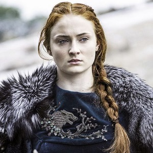

Ned Stark
In A Game of Thrones (1996), Ned Stark is introduced as the virtuous and honorable patriarch of House Stark and the father of six children. The moral compass of the story, he is content to remain far from courtly intrigues and is unwavering in his view of loyalty and honor. His family name, Stark, serves as an indication of his resistance to moral compromise, but his boundaries are increasingly tested over the course of the novel. Finding himself a key player in the escalating political intrigue of King's Landing, Ned struggles as his own sense of honor draws him into corrupt goings-on at court. As the story progresses, he begins to see the importance of moral and practical compromises to achieve a just end, and is ultimately forced to choose between the safety of his family and doing what is right.
Sean Bean said of the character, "he’s a good man trying to do his best in the middle of this corruption, he’s a fish out of water, he’s used to being up north in Winterfell where people are pretty straight and pragmatic, and he comes down to a place where people are playing games and backstabbing … he’s a principled man who tries to hold things together. This is a journey that he makes where ultimately his loyalty causes his downfall."
Arya Stark
Arya is left-handed and talented in sums and housekeeping, and is excellent at horse-riding. In contrast to her more praised sister Sansa, who favors activities traditionally befitting a noblewoman and expresses disdain for outdoor activities, Arya shows no interest in dancing, singing and sewing, and revels in fighting and exploring, much to the chagrin of her mother and household tutor Septa Mordane. She is described as "wolf-blooded", blunt, impulsive and "always difficult to tame" by her mother, and was given the nickname "Arya Underfoot" by the guards of Winterfell. She is particularly close to her bastard half-brother Jon Snow, who encourages her to learn how to fight and gives her the smallsword Needle. The sword is well suited to Arya's slender build and her favored "Water Dance" (fencing) style which emphasizes speed and agility with a thin, light rapier used in quick thrusting attacks. Throughout her travels, Arya displays great resourcefulness and cunning and also becomes increasingly ruthless.
Arya is the only one out of her full-siblings to inherit the Stark features and is said to resemble her late aunt Lyanna in both looks and temperament. At the start of the series, she is generally regarded as messy and plain-looking, and often mistaken for a boy; but there are multiple instances in the books of her (favorable) comparison to the beautiful Lyanna, and catching the eye of men later on in the series. She is also a skinchanger, capable of telepathically possessing her direwolf Nymeria in dreams, as well as psychically bonding with a street cat in Braavos.
Sansa Stark
Sansa Stark is the second child and elder daughter of Eddard Stark and Catelyn Stark. She was born and raised in Winterfell, until leaving with her father and sister at the beginning of the series. She was raised with a younger sister Arya Stark, two younger brothers Rickon Stark and Bran Stark, as well as an older brother Robb Stark, and an older illegitimate half-brother, Jon Snow.
Raised as a lady, Sansa is traditionally feminine. Sansa's interests are music, poetry, and singing. She strives to become like the heroines of romantic tales by attempting to find a prince, knight, or gentleman to fall in love with. For a companion animal, she owned a direwolf named Lady. However, Lady was killed in place of Arya's direwolf, Nymeria, in the first installment. Lady is killed because Nymeria attacked the Crown Prince, Joffrey Baratheon and later fled.
Sansa has been described as tall, slim, womanly, and beautiful, destined to be a lady or a queen. She has blue eyes and thick auburn hair that she inherits from her mother, who came from House Tully in the Riverlands region prior to her marriage to Eddard Stark. She has her hair dyed dark brown later on while in the Vale, disguising as Alayne Stone- the bastard daughter of Petyr Baelish. Sansa is 11 years old in A Game of Thrones and nearly 14 in A Feast for Crows. Arguably the most naive of the Stark children at the start of the series, Sansa often finds herself used as a pawn in the machinations of the other characters. However, as the story progresses, she matures and becomes more of a player of the game rather than a pawn for other characters.
Bran Stark

Bran is seven years old at the beginning of A Game of Thrones (1996). He is the fourth child and second son of Eddard "Ned" Stark and his wife Lady Catelyn, and has four siblings: an older brother Robb, two older sisters Sansa and Arya, a younger brother Rickon, and an illegitimate older half-brother Jon Snow. Bran is constantly accompanied by his direwolf Summer, the simpleton stableboy Hodor (who carries him around after his crippling), and the Reed siblings Meera and Jojen.
Martin describes Bran as favoring his mother in appearance, having the thick auburn hair and deep blue eyes of the Tullys. According to Martin, Bran is a strong willed, but sweet and thoughtful boy, well-loved by everyone at Winterfell. He enjoys climbing and exploring the walls and ramparts of the castle; he is also dutiful and tough-minded.
With his dreams of being a knight dashed by the crippling attempt on his life in A Game of Thrones, duty forces Bran to overcome his new limitations and embrace his new abilities. His gradual acceptance of his seemingly-prophetic visions (called the "greensight") and his ability to psychically inhabit his direwolf Summer (which marks him as a type of skinchanger known as a warg) show his growing maturity and his worth beyond the loss of his legs. He also manages to enter the mind of the stableboy Hodor, and later skinchanges into crows and even weirwood trees under the mentorship of the Three-Eyed Raven.